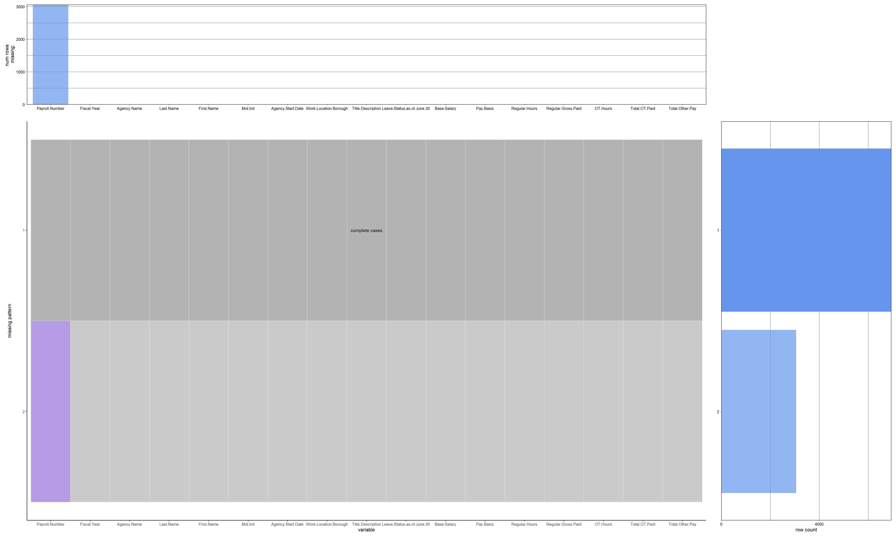
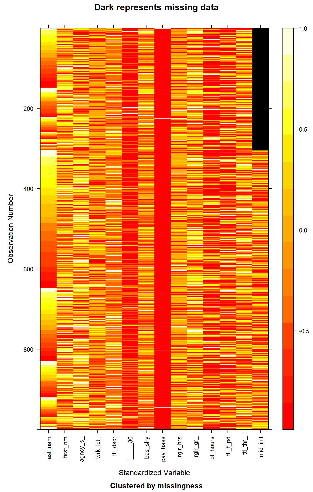

Code
library(httr)
library(jsonlite)
library(knitr)
library(redav)
library(mi)
library(ggplot2)
library(data.table)library(httr)
library(jsonlite)
library(knitr)
library(redav)
library(mi)
library(ggplot2)
library(data.table)The data that we will be using to analyze Payroll Data is from the NYC Open Data website and is titled as Citywide Payroll Data (Fiscal Year). The data set was created back in 2015 and has been constantly been updated on a annual basis (last update was on November 28,2023). It tells us about the amount of money spent on salaries and overtime pay for all municipal employees based in New York City. The data is provided by Office of Payroll Administration (OPA).
The data can be downloaded as a JSON file from the website mentioned above. We make an API request with this URL, to obtain the data and convert it to a Dataframe for further processing.
#importing the dataset
nyc_payroll_data <- fread("C:/Users/athar/Desktop/Columbia Sem1/edav/nyc_payroll_data.csv")
print(head(nyc_payroll_data)) Fiscal Year Payroll Number Agency Name Last Name
1: 2017 NA COMMUNITY COLLEGE (KINGSBORO) DURRANT
2: 2018 742 DEPT OF ED PEDAGOGICAL FORSCHEIN
3: 2015 NA DEPT OF ED PEDAGOGICAL SITTENREICH
4: 2019 744 DEPT OF ED PARA PROFESSIONALS VARGAS
5: 2017 NA ADMIN FOR CHILDREN'S SVCS GARNER
6: 2021 742 DEPT OF ED PEDAGOGICAL CARPIO
First Name Mid Init Agency Start Date Work Location Borough
1: SHERYLL A 06/18/2015 BROOKLYN
2: DEBORAH 09/08/1998 MANHATTAN
3: ROBIN A 09/04/1974 OTHER
4: ROSANNA 09/16/2014 MANHATTAN
5: LASHAWN M 09/25/2001 MANHATTAN
6: GERARDO L 09/19/2005 MANHATTAN
Title Description Leave Status as of June 30 Base Salary
1: CONTINUING EDUCATION TEACHER ACTIVE 36.64
2: TEACHER ACTIVE 113685.00
3: TEACHER SPECIAL EDUCATION CEASED 100049.00
4: ANNUAL ED PARA CEASED 37055.00
5: CHILD PROTECTIVE SPECIALIST ON LEAVE 54720.00
6: TEACHER ACTIVE 109852.00
Pay Basis Regular Hours Regular Gross Paid OT Hours Total OT Paid
1: per Hour 0.00 39.78 0.00 0.00
2: per Annum 0.00 103130.28 0.00 0.00
3: per Annum 0.00 55669.50 0.00 0.00
4: per Annum 0.00 4479.66 0.00 0.00
5: per Annum 979.25 31839.91 112.75 4597.92
6: per Annum 0.00 105666.72 0.00 0.00
Total Other Pay
1: 0.00
2: 0.00
3: 0.00
4: 7.96
5: 2482.28
6: 4425.57print(dim(nyc_payroll_data))[1] 10000 17The data consists of 5.66 million rows (essentially 5.66 million municipal employees) and 17 columns. Every row basically tells us about the employee salary, their work location, agency, base pay, overtime (if any), etc. However, the data size is too large for efficient processing hence we random sample our data to the size of 10000 samples for our study.
# Display columns of the dataset
kable(data.frame(Column_Names = names(nyc_payroll_data)), "markdown")| Column_Names |
|---|
| Fiscal Year |
| Payroll Number |
| Agency Name |
| Last Name |
| First Name |
| Mid Init |
| Agency Start Date |
| Work Location Borough |
| Title Description |
| Leave Status as of June 30 |
| Base Salary |
| Pay Basis |
| Regular Hours |
| Regular Gross Paid |
| OT Hours |
| Total OT Paid |
| Total Other Pay |
Presented above are the columns of the dataset.
On further examination of the data, we find that there are few inconsistencies in the data:
The salaries for certain employees have not been mentioned per annum but on a per day or hour basis. Hence, we need to scale the data accordingly, to ensure that the data is uniform and fair comparisons can be made.
There exist some NAN values in the data.
Explain in detail how your data will enable you to answer your research questions from the introduction.
Describe any patterns you discover in missing values. If no values are missing, graphs should still be included showing that.
(suggested: 2 graphs plus commentary) Showing count of NAN values per column
colSums(is.na(nyc_payroll_data)) |> sort(decreasing = TRUE) Payroll Number Fiscal Year
3047 0
Agency Name Last Name
0 0
First Name Mid Init
0 0
Agency Start Date Work Location Borough
0 0
Title Description Leave Status as of June 30
0 0
Base Salary Pay Basis
0 0
Regular Hours Regular Gross Paid
0 0
OT Hours Total OT Paid
0 0
Total Other Pay
0 We see that only one column, namely mid_init has missing values. This feature represents the middle initial of the person under consideration.
plot_missing(nyc_payroll_data, percent = FALSE)
As can be seen from the above plot, there are only two patterns which can be observed in our data. The first being the complete lack of NaN values, whereas the second pattern exhibits missing values in one column only, namely, mid_init.
The graph on the right shows that there are nearly 300 rows exhibiting the second pattern, and about 700 points exhibiting the first, where they do not have any missing values at all.
We also get to see which columns have missing values in the form of a bar chart on top, and see that only one column falls under this category.
missing_data.frame(nyc_payroll_data) |> image()Warning in .local(.Object, ...): Last Name : some observations changing to NAWarning in .local(.Object, ...): First Name : some observations changing to NAWarning in .local(.Object, ...): Mid Init : some observations changing to NAWarning in .local(.Object, ...): Mid Init : some observations . changing to NAWarning in .local(.Object, ...): Work Location Borough : some observations
changing to NANOTE: The following pairs of variables appear to have the same missingness pattern.
Please verify whether they are in fact logically distinct variables.
[,1] [,2]
[1,] "Last Name" "First Name"
This graph shows us the missing values in the entire dataset. The cells represent the actual values after scaling, defined by each row and column of the actual dataset. Higher values take on the lighter colors, whereas colors close to red represent values closer to -1.
The values in black, indicate missing data. Here, we see that mid_init has missing data for nearly 300 hundred contiguous rows.
Although the absolute reason for the same is unknown, it could be possible that this data was not collected at all in that period. This can be inferred from the pattern.